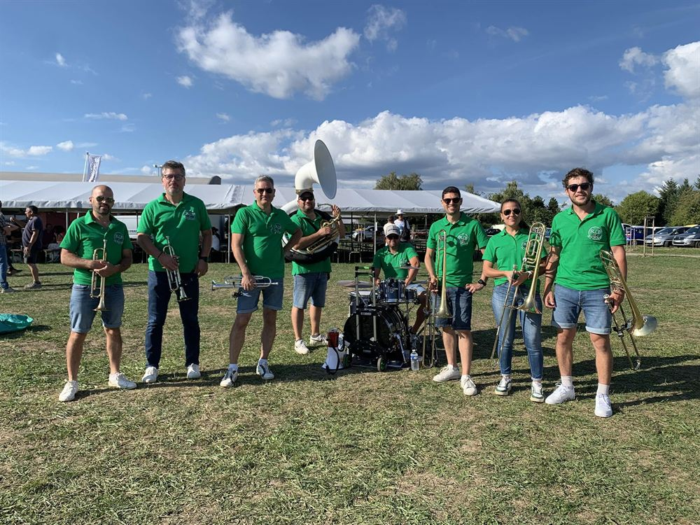
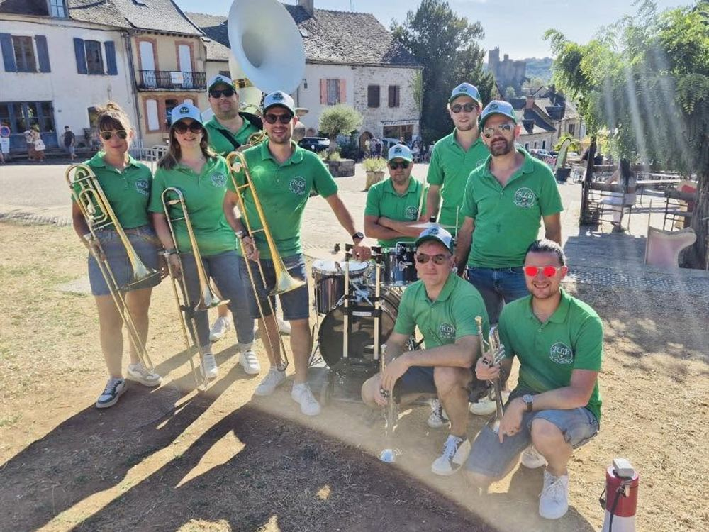
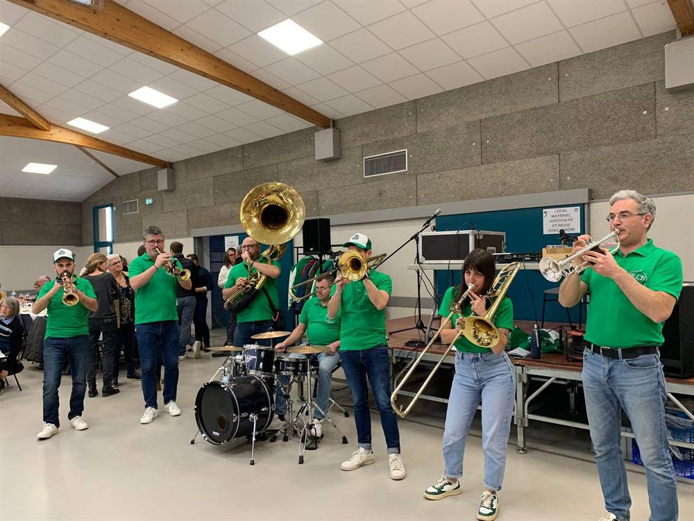
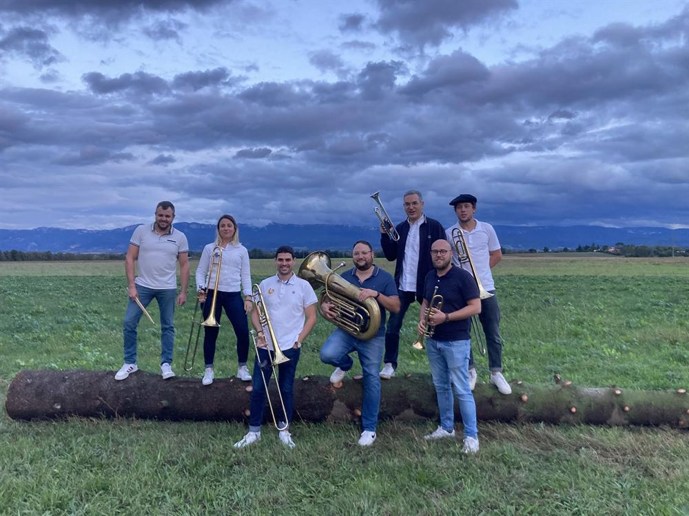

Fanfare & banda de cuivres · Drôme
Un spectacle qui va vous faire danser et chanter : nous revisitons les musiques de tous genres et de toutes générations dans un style moderne et festif.
Partageant la même passion, nous nous sommes réunis en 2023 au sein d'un streetband composé principalement de cuivres, afin de vivre et partager avec vous des moments musicaux uniques.
Variété française ou étrangère : nous revisitons les musiques de tous genres et de toutes générations dans un style moderne et festif, pour vous offrir un spectacle qui va vous faire danser et chanter.
Nous intervenons pour vos événements publics ou privés : anniversaires, mariages, départs à la retraite, fêtes de village, festivals, animation d'apéritifs ou de repas…

Drôme, Ardèche, Isère, Rhône et Loire… et jusqu'à l'au-delà !
8 musiciens





La meilleure façon de savoir si on colle à votre événement : nous regarder jouer.
Quintenas (07) · 2026
Une date à nous proposer ? Écrivez-nous.
Tout ce qu'un organisateur a besoin de savoir avant de nous confier son événement.
Nos tarifs sont établis sur devis, en fonction de la demande : durée souhaitée, lieu, distance et type d'événement. L'animation d'un apéritif et celle d'une fête de village entière ne se chiffrent pas de la même façon.
Le devis est gratuit et sans engagement. Décrivez-nous votre projet par téléphone ou par e-mail, nous revenons vers vous sous 48 heures.
Nous jouons par séquences de 30 minutes, entrecoupées de pauses, pour un total de 2 h 30 à 3 h de musique.
Ce découpage permet de rythmer toute une journée ou toute une soirée plutôt que de tout concentrer sur un seul moment : accueil du public, apéritif, repas, fin de soirée. Les pauses laissent aussi respirer vos invités — et nos poumons.
Oui, et c'est même l'un de nos atouts. Nous sommes très mobiles : entre deux sets, nous nous déplaçons facilement d'un point à un autre de votre événement — la place du village, le parvis de l'église, la cour, la salle, le stand des exposants. Sans matériel à démonter ni installation à refaire.
En revanche, nous jouons en statique : nous ne jouons pas en marchant, et nous ne proposons donc pas de déambulation musicale. Le déplacement se fait entre les sets, jamais pendant.
Non, rien de tout cela. Nous tournons à 100 % à l'énergie humaine : ni sono, ni branchement électrique, ni éclairage, ni scène.
C'est tout l'intérêt d'une fanfare de rue : nous nous déplaçons au milieu du public, sans câbles ni installation. Aucune contrainte technique pour vous, aucun temps de montage.
La seule chose à prévoir : le repas et les boissons des musiciens.
Nous jouons en intérieur comme en extérieur, et en toute saison. Salle des fêtes, place de village, cour de ferme, chapiteau, rue : tout nous va.
La pluie est la seule chose qui contrarie un musicien du Roue Libre Brass. Si votre événement est en plein air, prévoyez une solution de repli : préau, salle des fêtes, chapiteau. Nos cuivres et nos peaux de batterie vous en remercieront.
Trois registres, que nous dosons selon le moment de votre événement.
Le festif banda, pour faire chanter le public. Les incontournables des fêtes votives et des ferias, ceux que tout le monde reprend en chœur : Vino Griego, Les yeux d'Émilie, Hegoak, La Goffa Lolita, Les Fêtes de Mauléon, Aline.
Le dance, pour faire danser. Variété française ou étrangère arrangée pour les cuivres, de toutes générations : Party Rock Anthem, Bruno Mars, Lady Gaga, The Weeknd…
Le feutré, aux accents jazzy, pour accompagner sans couvrir les conversations — idéal pour un apéritif de mariage, un vin d'honneur ou un cocktail : Oh When the Saints, Les Copains d'abord, Los Miuras, El Gato Montés.
Nous sommes basés dans la Drôme et rayonnons sur la Drôme, l'Ardèche, l'Isère, le Rhône et la Loire. Au-delà, cela reste ouvert à la discussion.
Nous avons déjà joué à Chabeuil, Bourg-de-Péage, Alixan, Châteauneuf-sur-Isère, Beaumont-lès-Valence, Saint-Marcel-lès-Valence, Chanos-Curson, La Roche-de-Glun, Montboucher-sur-Jabron, Jaillans, Hostun, Fauconnières et Saint-Thomas-en-Royans dans la Drôme ; à Tournon-sur-Rhône, Ardoix et Saint-Désirat en Ardèche ; à Fitilieu et La Rivière en Isère ; et jusqu'à Najac, dans l'Aveyron.
Particulier, comité d'entreprise, office de tourisme, mairie, comité des fêtes, association, restaurateur… n'hésitez plus à contacter le Roue Libre Brass pour l'animation de vos événements les plus festifs !
Votre contact : Pierre-Henri Guiral
Association loi 1901 · Devis gratuit · Réponse sous 48 h